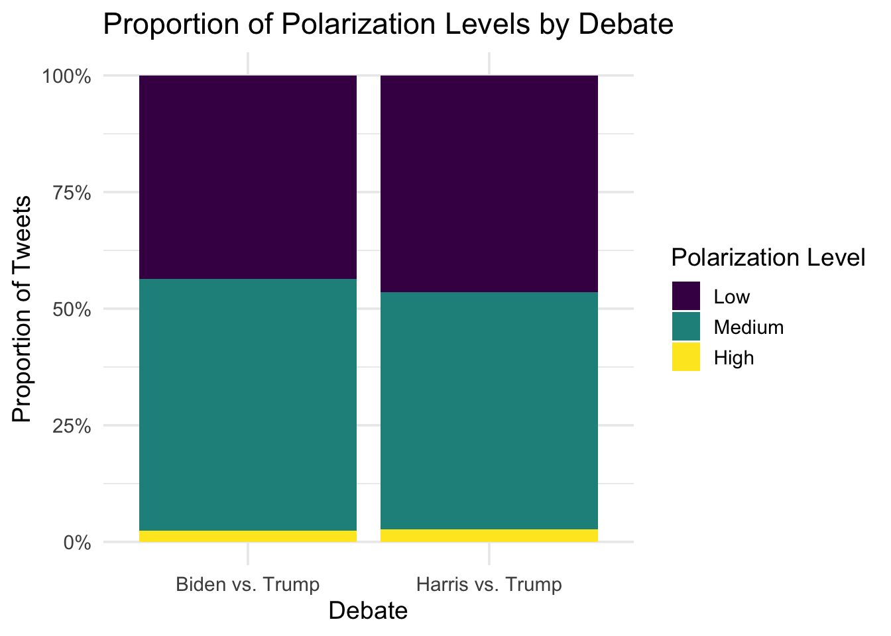
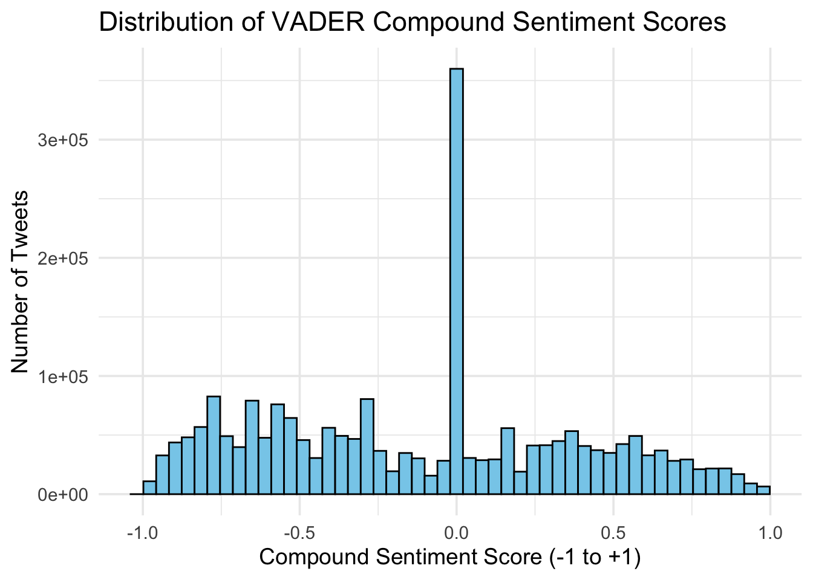
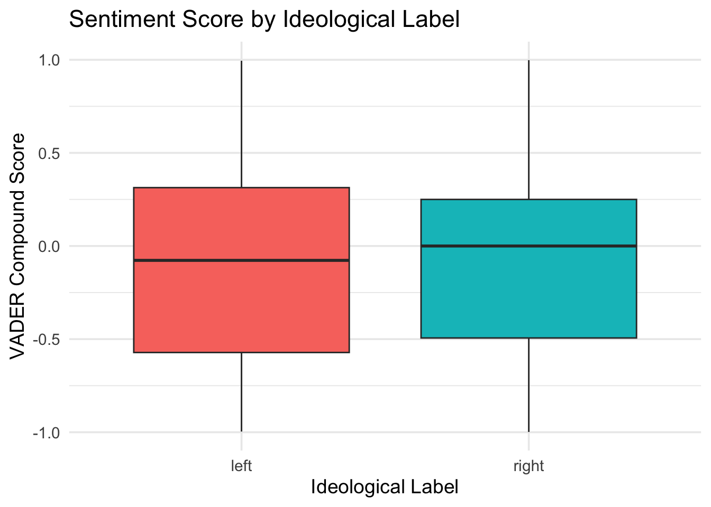
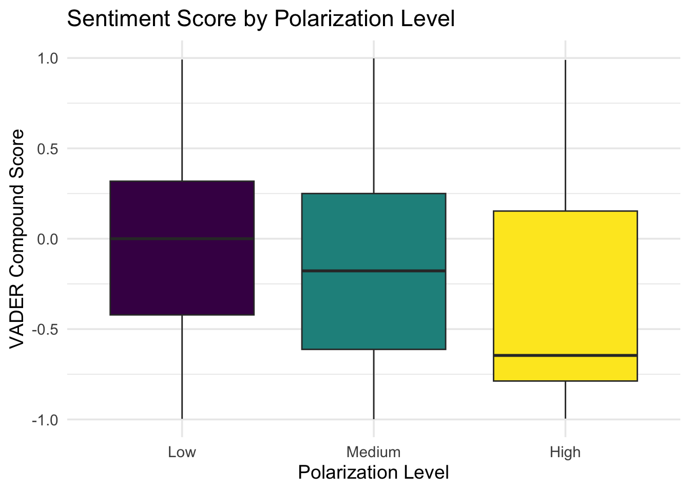

| Tweet Text | Debate | Ideology | Polarization | Sentiment Score |
|---|---|---|---|---|
| rt crnational president trump is the clear winner of tonights debate he has set a path forward to restoring the american dream and making america great again to help president trump win this election sign up at | Biden vs. Trump | right | Medium | 0.965 |
| rt boloudon mattgaetz ronnyjacksontx president trumps campaign team give a standing ovation for debate performance this comes as the left is setting the stage to replace biden due to his obvious dementia joe biden definitely doesnt want you to share this | Biden vs. Trump | left | Medium | 0.569 |
| rt rpsagainsttrump trump i didnt have sex with a porn star fact check false | Biden vs. Trump | left | Low | 0.000 |
| rt nickknudsenus whoa wonder why the north america building trade unions nabtu just endorsed president biden and not trump watch and share the video they just released please share unionsforall | Biden vs. Trump | right | Medium | 0.772 |
| share this and then share this and then vote blue in november voteblue rt rbreich trump spewed more lies about immigrants and the border tonight than i could even count here are 5 of the biggest immigration myths debunked | Biden vs. Trump | right | High | 0.079 |
Mapping Polarization Around the 2024 U.S. Presidential Debates
LLM-Coded Evidence on Debate-Driven Polarization and Sentiment
Abstract
Presidential debates no longer just inform; they trigger a real-time cascade that sorts audiences, hardens camps, and drenches the conversation in negativity.This study maps polarization and sentiment in real-time social media discourse around the 2024 U.S. presidential debates (Biden–Trump; Harris–Trump). We analyze ~2.24 million tweets collected from one hour before to one hour after each debate, coding tweet-level ideology and a 15-point polarization scale with large language models (LLMs).The results show that debate talk is dominated by medium-intensity polarization, reliably tilting left in volume, and that the more polarized the discourse, the more negative its tone, when sentiment is mildly negative on average (mean compound ≈ −0.11) and becomes progressively more negative as polarization increases. Debate talk skews left overall, with modest shifts across the two events. Strikingly, the two debates produced almost the same structure of online reactions—suggesting that the format itself, more than the candidates, governs how social media processes these events. Methodologically, large language models make this scale of analysis possible but competing models disagree in consequential ways unless calibrated and adjudicated. Substantively, the findings recast debates with predictable spikes of polarized, negative content.This research contributes a detailed snapshot of the political discourse and presents a robust, replicable framework for analyzing social media data. The resulting dataset and methodology offer a valuable resource for future studies in political science and computational communication.
Keywords
polarization, sentiment analysys, scale development, political communication, R, quarto
1 Introduction
The 2024 U.S. presidential debate between Joe Biden, Kamala Harris, and Donald Trump ignited an immediate and intense reaction on social media. The viral nature of these reactions, fueled by memes, video clips, and rapid user-generated commentary, and on these we can found evidence of polarization. While historical research suggests that presidential debates typically have “minimal effects” on voter behavior, Biden’s withdrawal from the race weeks later signals an unprecedented shift in the influence of social media on electoral outcomes. This hybrid media environment raises a core question: how does real-time digital discourse register and amplify polarization around high-salience political events?
This study examines how real-time digital discourse reacts to a televise debate with one of the most polarized political decision-making in the wake of one of the most consequential debates in American electoral history. Specifically, it analyzes large-scale Twitter/X discourse surrounding the 2024 debates to map the ideological balance of the conversation and the intensity of polarization, and to test whether polarization is associated with more negative sentiment. Beyond describing these patterns, we assess whether the debates differed in their online profiles, for example if Biden–Trump and Harris–Trump attract different mixtures of left/right voices or levels of polarized talk? By integrating framing analysis and computational approaches, this project provides a methodological advancement in political communication research, offering novel insights into the hybrid media environment that increasingly dictates electoral politics.
We situate the work in comparative political communication. Prior research on civic culture and media systems underscores that information flows and communication styles travel across contexts (Almond & Verba, 1989; Rojas & Valenzuela, 2019). The project forms part of a broader, ongoing program on debates, populist rhetoric, and polarization and advance the creation of new scales to measure polarization and how include machine learning process in the analysis of big data, including extensions to Latin American cases and multimodal debate analysis (Mazorra Correa et al., 2025; Rojas & Mazorra Correa, 2025). The present article focuses on the U.S. debates as a high-information test case while developing methods that generalize to cross-national comparisons.
For this reason we ask the next questions:
RQ1. How do ideological orientation and polarization intensity manifest in large-scale Twitter discourse surrounding the 2024 U.S. presidential debates, and do these patterns differ between the Biden–Trump and Harris–Trump debates?
RQ2. How is sentiment distributed across ideological orientations and polarization levels, and to what extent is higher polarization associated with more negative sentiment?
To explore the potential of Artificial Intelligence (AI) and large language models (LLMs) as tools for analyzing social media data, this study serves as an exploratory pilot, testing their application as coding assistants for multimodal analysis. LLMs like GPT-4 from OpenAI or Gemma3 from Gemini models are probabilistic systems that generate outputs based on contextual patterns and word frequencies. This nature highlights the importance of precise input prompts to guide the model’s interpretation. For this work, GPT-4 was employed as a coder to analyze multimodal features of tweets collected from Syntehsio covering the hour during the presidential debates in the United States in 2024 (one hour before and one hour after the debate).
An example image from the dataset was selected to test the model’s capabilities. The approach involved creating a prompt that included a description of polarization to classify as context for the model’s task. GPT-4 was then instructed to act as a social science coder specializing in communication to classify the tweet on 2 questions on polarization. The prompt was also introduced to a local model Gemma3:12b running on Ollama architecture to compare both outputs and the reliability of the codification.
According to this objective, we ask the next questions:
RQ3. To what degree do large language models (LLMs) agree when coding political polarization in social media content, and what are the implications of inter-model disagreement for the reliability of automated annotation?
RQ4. How does GPT-4 perform relative to an open-weight LLM (Gemma3:12B) in coding political polarization, and what potential improvements, such as LoRA fine-tuningm could enhance the performance of smaller models for this task?
2 Literature Review
2.1 Televised Presidential Debates
Presidential debates, long considered pillars of democratic discourse, are increasingly present in a hybrid media ecology where both legacy (as radio and televised debates) and digital platforms shape, and sometimes distort, their civic function. Classical theories of democratic deliberation position debates as tools of voter enlightenment, promoting informed decisions and accountability (Olson, 2025). Yet, the assumption that debates function uniformly as rational public spheres and have strong effects has been increasingly challenged(Cantú & Carreras, 2023). We argue that debates may no longer reflect democratic discussion but perform a precarious communicative balancing act. Their function is now modulated by real-time interactions across platforms, by the volatility of attention, and by emotional resonance rather than policy clarity (Jiménez-Preciado et al., 2025; Lukito & Pevehouse, 2022). Even when a debate is not necessarily polarized, the public can shape its interpretation according to the polarization context of society.
While debates have historically operated as sites of image restoration and rhetorical confrontation (Martínez Abellán, 2024), their dynamics have grown more affective and fragmented, with online discourse extending and refracting their impact far beyond the televised moment (Eaton, 2024). At the same time, debates serve as discursive battlegrounds that reflect affective polarization, not just partisan disagreement (Brooks et al., 2024). The shift to platforms like YouTube and Twitter has revealed how mediated intergroup contact can either mitigate or exacerbate affective tensions depending on narrative framing and sequence of exposure. This environment challenges journalistic norms as well: although debates offer a rare moment of unscripted candidate performance, the role of journalists and moderators is contested, sometimes triggering backlash rather than reinforcing accountability (Franco-Hantzsch & Dagatti, 2022; McKinney, 2024). As some researchers argue, debates still hold the potential to shape voter decisions, particularly in weakly institutionalized systems (Cantú & Carreras, 2023), but this potential is increasingly contingent on their broader amplification across media layers, rather than confined to the debate stage alone. Theoretical frameworks that engage with debates today must therefore contend with the interplay between traditional broadcast norms, emergent affective dynamics, and the algorithmic structuring of public discourse.
The electoral debate can be seen as a media event that generates political expression on various screens, from TV to social media (Wells et al., 2016). There is a relationship between the electoral context, the gestures of the candidate rather than speech content, and the response volume and valence to social media (Shah et al., 2016), and how this populist communication style drives attention on Twitter during political debates and how people response differently to the visual gestures, tone and verbal dimension of the debate in social media (Bucy et al., 2020). To analyze this problem, Shah et al. (2023) demonstrate the effectiveness of multimodal classifiers in analyzing political debates, considering visual, audio, and textual features, and Lukito & Pevehouse (2022) shows the power of social media data in the analyses of such debates .
By integrating these perspectives, this study integrates theories of agenda-setting and framing (McCombs & Shaw, 1972), dual screening and media co-production (Wells et al., 2016), and affective intelligence (Marcus et al., 2000) to explain how digital platforms mediate real-time political reactions. The study also draws from visual communication theory (Bucy et al., 2020) to assess how emotional appeals, candidate performance, and framing influence public engagement. The electoral debate can be seen as a media event that generates political expression on various screens, from TV to social media (Jiménez-Preciado et al., 2025; Lukito & Pevehouse, 2022; Wells et al., 2016). There is a relationship between the electoral context and the response volume and valence to social media (Shah et al., 2016), and how this populist communication style drives attention on Twitter during political debates and how people response differently to the debate in social media (Bucy et al., 2020). To analyze this problem, Shah et al. (2023) demonstrate the effectiveness of multimodal classifiers in analyzing political debates, considering visual, audio, and textual features. By integrating these perspectives, the project offers a novel approach to studying the impact of populist rhetoric in televised presidential debates.
2.2 Polarization
The political debates in America in 2024 occur not in a vacuum but within a polarized society, as evidenced by the total number of votes. Additionally, these debates take place in a hybrid media environment dominated by digital communication. With the rise of digital media and a networked public sphere, scholars warned that changing information flows could reshape how citizens sort and see one another (Friedland et al., 2006; Sunstein, 2007). Early evidence of ideological clustering online and partisan sorting in the United States made these concerns concrete (Abramowitz & Saunders, 1998; Adamic & Glance, 2005; Fiorina & Abrams, 2008). To evaluate such shifts and their democratic implications, it is essential to measure polarization, and to be clear about which form we are measuring and in the context we are measuring it (Rojas & Mazorra Correa, 2025).
One way to see polarization is to distinguish attitudinal (issue-based) polarization (greater extremity or distance in policy preferences) from other forms of polarization like ideological or affective (Abramowitz & Saunders, 2008; Abramowitz & Webster, 2016). Debate persists over its extent in the U.S. electorate (Fiorina & Abrams, 2008), and cross-national comparisons show important variation and citizens’ sensitivity to it (Lupu, 2015). Researchers therefore also measure perceived polarization, what people think the level of polarization is (Armaly & Enders, 2021; Westfall et al., 2015; Yang et al., 2016), because perceptions can move independently of actual issue extremity and still shape behavior.
A third strand focuses on affective polarization, this is how much partisans dislike one another. Defined as the tendency to evaluate opposing identifiers as a disliked out-group, affective polarization has risen markedly in the U.S. (Iyengar et al., 2012). Evidence suggests linkages among forms, like ideological polarization predicting affective polarization, and affective polarization predicting perceived polarization, underscoring the need to measure each separately and jointly (Algara & Zur, 2023; Armaly & Enders, 2021). Long-run, cross-country evidence also shows that trajectories differ across contexts and track elite polarization, reinforcing the value of comparable measurement over time and place (Boxell et al., 2022).
Social media is often portrayed as an engine of polarization: selective exposure, partisan media, and homophilous discussion networks could create echo chambers (Lee & Cho, 2023; Levendusky, 2013; Sunstein, 2007)). Yet the causal order between selective exposure and polarization remains contested (Stroud, 2010), and real-world findings are mixed. In Latin America, several studies report little systematic link between routine media or platform use and affective polarization (Rojas & Mazorra Correa, 2025; Scherman et al., 2022; Valenzuela et al., 2021). At the same time, today’s media environment can heighten perceived polarization by spotlighting extreme partisan cases (Yang et al., 2016) and by hostile interpretations among partisans (Tong et al., 2021). Misinformation concerns further complicate inference, with evidence that social media use does not uniformly increase misinformed beliefs (Valenzuela, Muñiz, et al., 2022) and that the affectively polarized may be more prone to produce misinformation (Osmundsen et al., 2021). These patterns strengthen the case for measuring multiple facets (attitudinal, affective, and perceived polarization) within social media contexts rather than assuming one pathway.
Polarization affects core democratic goods. When groups doubt one another’s competence or good faith, deliberation, requiring publicity, equality, rationality, and argument grounded in the common good, erodes (Mendelberg & Oleske, 2000). Higher polarization is associated with lower democratic support and more openness to illiberal remedies, making early detection and tracking crucial (Torcal & Magalhaes, 2022; Wagner, 2021). At the same time, polarization can mobilize citizens, increasing turnout and other forms of participation, which also warrants measurement to assess trade-offs (Harteveld & Wagner, 2023).
Beyond citizens’ polarization, perceived media polarization (how people judge the media system’s ideological tilt) has distinct antecedents and consequences. Perceptions can form through meta-coverage that emphasizes bias and conflict (Watts et al., 1999), through hostile media judgments (Vallone et al., 1985), or against a background of debates over objective bias (D’Alessio & Allen, 2000; Dennis, 1997; Entman, 1996; Fico & Freedman, 2008). Because perceptions of bias shape how audiences use and evaluate outlets (Ho et al., 2011; Stroud et al., 2014), measuring perceived media polarization is indispensable for linking the media system to affective and perceived societal polarization and to participation (Tong et al., 2021).
In asymmetric contexts, where elites and observers see movement toward one pole, perceptions can also feed back into representation and participation. Work on asymmetric polarization argues that conservative-leaning climates of opinion can arise when elites misread public preferences based on limited or biased cues (Broockman & Skovron, 2018; Hacker & Pierson, 2015). Tracking perceived media polarization alongside affective and attitudinal measures is therefore critical, especially in comparative settings such as Latin America where trajectories and media–politics linkages differ (Boxell et al., 2022; Rojas & Mazorra Correa, 2025; Rojas & Valenzuela, 2019)
3 Methods
This study utilizes a multi-stage computational approach to analyze the content of 2,238,712 tweets related to the 2024 U.S. presidential debates compiled by usign Synthesio on the SMAD (Social Media and Democracy) research group at the university of Wisconsin-Madison. The methodology encompasses data collection and preprocessing, AI-powered annotation, development of a polarization classification model, and sentiment analysis that can be found in the jupyter lab project in git hub that goes along with this article.
The initial dataset was compiled by merging multiple CSV files of tweets collected via the Synthesio platform during the two 2024 presidential debates (Biden-Trump and Harris-Trump). These files were merged to create a unified dataset. Raw tweet data was processed to generate a “santext” column for analysis. This process involved the following steps: de-duplication based on unique tweet IDs, removal of non-analyzable tweets (e.g., those marked “Deleted or protected mention”), and conversion to lowercase, followed by the removal of URLs and special characters using regular expressions. A random sample of 1000 tweets was subsequently extracted from this cleaned dataset for the annotation phase.
To create a labeled dataset for model training, Large Language Models (LLMs) were employed as expert coders. A subset of the tweets was annotated using two different models to assess their capabilities and evaluate inter-coder reliability. The seelcted 1000 tweet sample was processed via the OpenAI API, utilizing the GPT-4 model. The model was instructed to classify each tweet’s according to left and right ideology content and according to a polarization score using a detailed codebook defining scores ranging from -7 (strongly left) to +7 (strongly right), with a neutral classification, and to provide its response in a structured JSON format. The GPT-4 annotated data served as the ground truth for training the final classification models.
For comparison, a local Gemma 3:12B model was used via Ollama to classify a 100-tweet subset of the same sample using a few-shot prompting technique. Inter-coder reliability between the GPT-4 and Gemma annotations was evaluated using Krippendorff’s alpha for content analyses. A resulting alpha of -0.466 for the ordinal polarization scores indicated significant disagreement between the two models, highlighting the methodological challenges of using different LLMs for classification tasks.
Several machine learning models were evaluated to identify the most effective classifier for polarization, Naive Bayes, Bert and LightGBM (Light Gradient-Boosting Machine) are the models reported in the study (Ke et al., 2017; Meng et al., 2016; Shi et al., 2022; Zhang et al., 2018). While baseline models, including Logistic Regression and Naive Bayes, were tested. A Naive Bayes model was selected for a classification fo the tweets between left and right, and the final model combined BERT embeddings with a LightGBM classifier for the polarization score . The text of each tweet was transformed via distilBERT into a 768-dimensional numerical vector using the distilBERT-base-uncased model, converting the semantic content of the tweet into a format suitable for machine learning. After that, a LightGBM classifier was trained on these BERT embeddings, The model was trained to categorize tweets into four levels of polarization: None, Low, Medium, and High to accelerate the production of the model. These levels were derived from the original polar_score provided by the GPT-4 annotation. The trained model was then applied to the full dataset of over 2.2 million tweets to generate the final polarization labels.
To provide an emotional context to the analysis, sentiment scores were calculated for each tweet using the VADER (Valence Aware Dictionary and Sentiment Reasoner) library, a lexicon and rule-based sentiment analysis tool optimized for social media text that is a method reliable for this type of datasets (Nelson, 2023). For each tweet, four scores were generated and appended to the final dataset: negative, neutral, positive, and an overall normalized vader_compound score ranging from -1 (most negative) to +1 (most positive).
The following table provides an excerpt of the final processed dataset. It displays five sample tweets after sanitization, along with their final predicted classifications for ideological leaning, polarization intensity, and sentiment. This offers a concrete illustration of the data structure that forms the basis for the subsequent analyses.
To ensure clarity and reproducibility, the following table serves as a data dictionary. It formally defines each of the key variables used throughout this study, including their description and data type. This provides essential context for interpreting the statistical results.
| Variable Name | Description | Data Type |
|---|---|---|
| debate_label | Categorical variable identifying which of the two presidential debates the tweet is associated with. | Categorical (Factor) |
| santext | The sanitized tweet text, used as the input for all NLP and sentiment models. | Character (String) |
| polar_score | The original numerical score (-7 to +7) assigned by the GPT-4 annotator, used to derive the polarization_level. | Numeric (Integer) |
| ideology | The predicted ideological leaning of the tweet, classified as 'left' or 'right' by the final model. | Categorical (Factor) |
| polarization_level | The predicted intensity of polarization, classified into four ordered levels: 'None', 'Low', 'Medium', or 'High'. | Ordinal (Ordered Factor) |
| vader_compound | The normalized compound sentiment score from VADER, ranging from -1 (most negative) to +1 (most positive). | Continuous (Numeric) |
| vader_neg | The proportion of the tweet's text classified as negative by VADER. | Continuous (Numeric) |
| vader_neu | The proportion of the tweet's text classified as neutral by VADER. | Continuous (Numeric) |
| vader_pos | The proportion of the tweet's text classified as positive by VADER. | Continuous (Numeric) |
| Potential Reach | An estimate of the potential audience size for the tweet, based on the publisher's follower count. | Numeric (Integer) |
4 Results
To asess the agreement between GPT-4 and the locally run Gemma3:12B model in polarization classification, a sample of 100 tweets was annotated by both models and compared using Krippendorff’s alpha for ordinal data (Krippendorff, 1977, 2004). The resulting coefficient was -0.466, indicating substantial disagreement well below the conventional threshold for acceptable reliability (typically α ≥ 0.67).
Figure 1 visualizes this disagreement by plotting GPT-4’s assigned polarization scores on the x-axis and Gemma3:12B’s scores on the y-axis, with the red dashed line representing perfect agreement (1:1 correspondence). The scatter plot shows a wide dispersion of points away from the diagonal, with clusters at extreme values suggesting that while both models sometimes identified strong polarization, they often differed in direction (left vs. right) and intensity. This pattern underscores the methodological challenge of using different large language models for consistent polarization measurement.

Divergences occurred in both the direction (left vs. right) and the magnitude (low vs. high) of polarization. This highlights the methodological risk of assuming that different LLMs will converge in classification without extensive calibration. GPT-4 provided more stable and internally consistent annotations aligned with the intended coding framework for ideological orientation and polarization. In contrast, Gemma3:12B, as a smaller and less specialized model, showed greater variability and misalignment. While these results underscore GPT-4’s stronger performance in this domain, they also point to the potential of improving smaller, open-weight models like Gemma3 via targeted adaptation techniques such as LoRA fine-tuning to close the performance gap.
Across models, tree-based and embedding-based approaches outperformed agians the other models. On the binary left–right task, Logistic Regression reached 0.71 accuracy (macro-F1 = 0.71) while Multinomial Naive Bayes did better at 0.75 (macro-F1 = 0.75) on the 175-tweet test set, so Naive Bayes was chosen as the binary champion model. When predicting the full ordinal polarization score with Naive Bayes, performance collapsed (accuracy = 0.41; macro-F1 = 0.12 on 182 tweets), signaling that bag-of-words features struggle with fine-grained intensity. Collapsing to four levels (None/Low/Medium/High) and switching to LightGBM markedly improved results (accuracy = 0.61; macro-F1 = 0.58), with strongest recall on Medium (0.70) and best precision on High (0.78) but lower recall there (0.47). Using BERT embeddings, the illustrative BERT + Logistic Regression run reached ~0.60 accuracy on the same 4-level task, and the pipeline promotes the BERT + LightGBM variant as the production champion model for labeling the full 2.24M-tweet corpus. These patterns motivate the final choice of a BERT-embedded LightGBM classifier: it preserves most of the binary gains from NB while scaling better to ordinal intensity than bag-of-words baselines.
Aftter this results, human coder revise the divergences and choose the code of GPT-4. We begin by exploring the overall characteristics of the dataset to understand the general nature of the conversation. First, we examine the overall composition of the Twitter discussion. Analysis of 2.2 million tweets from the 2024 U.S. presidential debates, 60.42% were coded as left-leaning and 39.58% as right-leaning (Table 1). Ideological balance varied by event: during the Biden–Trump debate, left-leaning tweets comprised 64.7% (445,329/688,251) versus 58.5% (907,358/1,550,461) during Harris–Trump. A χ² test confirmed dependence between debate and ideology (χ²=7,618.93, df=1, p<.001). The table 1 below show the frequency and percentage of tweets classified with a left or right ideological leaning.
| ideology | n | percentage |
|---|---|---|
| left | 1352687 | 60.42 |
| right | 886025 | 39.58 |
Second, we show the distribution of polarization intensity among the tweets that showed clear polarization. The proportional distribution of polarization intensity was remarkably consistent between the Biden–Trump and Harris–Trump debates, suggesting that while ideological representation differed significantly and more left-leaning tweets in the Biden–Trump debate, the level of polarization was largely stable across events, as we can see in the next table.
| polarization_level | n | percentage |
|---|---|---|
| Low | 1009086 | 45.55 |
| Medium | 1149259 | 51.87 |
| High | 57143 | 2.58 |
Collapsing the 15-point polarization scale to three intensity levels, Medium polarization dominated the conversation (51.87%), followed by Low (45.55%) and High (2.58%) (Table 2). Intensity distributions were highly similar across the two debates—Biden–Trump: Low 43.6%, Medium 54.0%, High 2.36%; Harris–Trump: Low 46.4%, Medium 50.9%, High 2.67%. Although the distribution differed statistically by event (χ²=1,859.45, df=2, p<.001), the practical magnitude was very small (Cramér’s V≈0.029), suggesting broad stability in polarization intensity across debate pairings.
To understand if the conversational dynamics shifted between the two events, we can visualize the proportion of polarization levels for each debate. The chart below illustrates whether one debate prompted a more intensely polarized reaction than the other.

The general tone of the conversation is assessed using the VADER compound sentiment score, which ranges from -1 (most negative) to +1 (most positive). Overall tone was slightly negative (VADER compound: M=−0.111; Median=0.000; SD=0.499), with a heavy mass at 0.0 reflecting neutral or mixed content (Table 3). Left-leaning tweets were more negative on average than right-leaning tweets (−0.122 vs. −0.094), a difference that was statistically reliable (t=−42.03, df≈2,010,040, p<.001; Table 6). High polarization tweets were markedly more negative than both low and medium polarization tweets, supporting the idea that affective polarization is tied to more hostile or antagonistic discourse. The table 3 below provides the key summary statistics for this score.
| Mean | Median | Std. Deviation |
|---|---|---|
| −0.111 | 0.000 | 0.499 |
To visualize the spread of these scores, the histogram below shows the distribution of tweets across the sentiment spectrum. The plot highlights a large concentration of tweets at the neutral point (0.0) and reveals the overall shape and skew of the sentiment in the discussion.

Sentiment varied monotonically with polarization intensity. A one-way ANOVA showed a strong overall effect (F(2,·)=17,777.69, p<.001). Tukey HSD indicated that each pairwise contrast was significant: Medium vs. Low (Δ=−0.110), High vs. Low (Δ=−0.258), and High vs. Medium (Δ=−0.148), confirming that more polarized content is progressively more negative (Table 7 and table 8).
We use the Chi-Square Test of Independence to check if the debate event is associated with the ideological leaning or the polarization level of the tweets. A significant p-value (typically < 0.05) suggests that the distributions are not the same across the two debates.
| left | right | |
|---|---|---|
| Biden vs. Trump | 445329 | 242922 |
| Harris vs. Trump | 907358 | 643103 |
| Chi-Square (χ²) | p-value | Degrees of Freedom (df) |
|---|---|---|
| 7618.93 | < .001 | 1 |
Next, we test the association between the debate and the intensity of polarization (Low, Medium, High) for tweets that were classified as polarized.
| Low | Medium | High | |
|---|---|---|---|
| Biden vs. Trump | 296095 | 366857 | 16058 |
| Harris vs. Trump | 712991 | 782402 | 41085 |
| Chi-Square (χ²) | p-value | Degrees of Freedom (df) |
|---|---|---|
| 1859.45 | < .001 | 2 |
Here, we investigate the relationship between the sentiment of a tweet and its ideological or polarization classification.
To determine if a significant difference in sentiment exists between left-leaning and right-leaning tweets, we conduct an independent samples t-test. The statistical results, including the means for each group, the t-statistic, and the p-value, are presented in the table below.
| Mean Sentiment (Left) | Mean Sentiment (Right) | t-statistic | p-value | df |
|---|---|---|---|---|
| -0.122 | -0.094 | -42.028 | < .001 | 2010040 |
The box plot below provides a visual comparison of the sentiment score distributions for left- and right-leaning tweets. It clearly shows the median, interquartile range, and outliers for each group, complementing the statistical results from the t-test.

To test whether sentiment differs significantly across the Low, Medium, and High polarization levels, a One-Way Analysis of Variance (ANOVA) was conducted. The results, summarized in the table below, show a statistically significant effect of polarization level on the VADER compound sentiment score.
| Source of Variation | df | F-statistic | p-value |
|---|---|---|---|
| polarization_level | 2 | 17777.69 | < .001 |
Given the significant result from the ANOVA, a Tukey’s HSD post-hoc test was performed to examine the pairwise differences between the polarization levels. The table below shows that the mean sentiment score for each polarization level is significantly different from the others.
| Comparison | Mean Difference | Lower 95% CI | Upper 95% CI | Adjusted p-value |
|---|---|---|---|---|
| Medium-Low | -0.110 | -0.112 | -0.109 | < .001 |
| High-Low | -0.258 | -0.263 | -0.253 | < .001 |
| High-Medium | -0.148 | -0.153 | -0.143 | < .001 |
The box plot below visually summarizes the sentiment distributions for each polarization level, illustrating the differences identified by the ANOVA and Tukey tests. We can observe a clear trend where higher levels of polarization are associated with more negative sentiment scores. This shows a monotonic relationship between polarization intensity and sentiment: each step up in polarization is associated with a further drop into negative tone. This supports the interpretation that more polarized content is, on average, more negative, and that the effect is broad-based across the distribution.

5 Discussion
This study provides a comprehensive, computationally driven examination of polarization and sentiment in Twitter discourse surrounding the 2024 U.S. presidential debates. By combining large-scale machine learning classification with sentiment analysis, the findings offer empirical insights into how debates are received in the hybrid media environment described by Wells et al. (2016) and Lukito & Pevehouse (2022). In such environments, algorithmic curation and social signaling can heighten the perception of polarization even when extreme content remains a minority of overall discourse (Stroud, 2010; Sunstein, 2007; Yang et al., 2016).
The predominance of left-leaning tweets (60.4%) and the dominance of medium polarization (51.9%) underscore the extent to which debate discourse is shaped by already engaged and affectively aligned publics (Brooks et al., 2024). The relatively stable polarization distribution across the Biden–Trump and Harris–Trump debates suggests that, in the social media sphere, the debate format or candidate pairing may exert less influence on polarization intensity than the broader partisan climate (Cantú & Carreras, 2023). This stability aligns with prior research arguing that debates’ persuasive effects are often limited (Olson, 2025), yet their symbolic role as moments of partisan reinforcement remains strong (Martínez Abellán, 2024). Put differently, debate talk on social media appears to function more as identity signaling and in-group affirmation than as persuasion, consistent with work on affective polarization as an out-group evaluation process (Iyengar et al., 2012; Wagner, 2021) and with research on partisan media and discussion dynamics in networked environments (Lee & Cho, 2023; Levendusky, 2013).
The slightly negative average sentiment (M = −0.111) and the association between higher polarization levels and more negative sentiment echo Bucy et al. (2020) observations about the affective and antagonistic tone of online debate reactions. The finding that High polarization tweets were significantly more negative than Low or Medium supports affective intelligence theory, which holds that heightened partisan conflict amplifies negative emotional responses (Marcus et al., 2000). The sentiment gap between left- and right-leaning tweets (with left-leaning tweets being more negative) may reflect expectation gaps and perceived performance—patterns consistent with research on partisan media effects and candidate image repair (Eaton, 2024; Franco-Hantzsch & Dagatti, 2022). Normatively, this coupling of negativity and polarization raises familiar concerns about deliberative quality and trust(Mendelberg & Oleske, 2000; Torcal & Magalhaes, 2022), even as polarization can mobilize participation in some contexts (Harteveld & Wagner, 2023).
A key methodological contribution of this study is the evaluation of large language models (LLMs) as annotators. The substantial disagreement between GPT-4 and Gemma3:12B (Krippendorff’s α = −0.466) reveals the risks of assuming cross-model consistency in content coding. The scatterplot analysis indicates divergences not only in intensity but also in directional classification, suggesting that prompt design and model architecture strongly influence annotation outcomes, an issue that mirrors broader concerns in computational social science regarding reproducibility and bias and the need for human validation in context (Mazorra Correa et al., 2025). In light of these findings, adoption of LLMs for political text annotation should incorporate cross-model validation and human-in-the-loop protocols, especially for ordinal and ideologically charged variables. While GPT-4 was chosen as the coder for training, the lack of convergence with Gemma3 points to a need for standardized evaluation frameworks, much like those proposed in multimodal political debate analysis (Shah et al., 2023), and to preserve and test the full ordinal information rather than early collapsing categories.
Two implications follow for interventions that track with your results. First, because perceptions of polarization are sensitive to information mixes, incidental exposure to counter-attitudinal content and network heterogeneity remain promising levers: both can reduce polarization under conditions of elaboration and political tolerance (Chen et al., 2022; Xia & Shen, 2023). Second, hostile interpretations among partisans can heighten perceived polarization even without large changes in issue extremity; clarifying actual levels of disagreement and lowering out-group threat may help in high-salience moments (Renstrom et al., 2021; Tong et al., 2021). These points are consistent with comparative evidence that trajectories of affective polarization vary across countries and often track elite polarization (Boxell et al., 2022), and with calls to contextualize platform findings within broader political environments (Rojas & Mazorra Correa, 2025; Rojas & Valenzuela, 2019; Scherman et al., 2022; Valenzuela et al., 2021; Valenzuela, Muniz, et al., 2022).
Finally, the study’s two-hour windows capture acute reactions rather than the full news cycle. This is a strength for isolating debate effects but leaves downstream reframing, meme diffusion, and cross-platform propagation outside the scope here. Extending the temporal window, adding basic coordination/bot screens, and integrating the multimodal dimensions highlighted by Bucy et al. (2020) and Shah et al. (2016) , linking textual sentiment and polarization with visual cues, candidate nonverbals, and meme trajectories, could clarify how affective polarization is co-produced across media layers and why certain debate moments achieve viral lifecycles that extend influence beyond the event itself.
6 Conclusion
The findings allow clear answers to the RQs while underscoring the study’s substantive and methodological contributions. For our first research question ideological composition varied across events (left-leaning tweets = 60.4%), but polarization intensity was strikingly stable across the Biden–Trump and Harris–Trump debates: medium polarization predominated (51.9%). This pattern is consistent with a hybrid media environment in which debate talk operates less as persuasion than as identity signaling and in-group affirmation (Iyengar et al., 2012; Lee & Cho, 2023; Levendusky, 2013; Lukito & Pevehouse, 2022; Wells et al., 2016). For our second research question average sentiment was slightly negative (M = −0.111), and negativity increased monotonically from Low to High polarization; left-leaning tweets were more negative on average. These results echo observations about the affective, antagonistic tone of online debate reaction and comport with affective-intelligence expectations that heightened partisan conflict amplifies negative emotion (Bucy et al., 2020; Marcus et al., 2000), with downstream implications for deliberation and democratic support even as mobilization can rise under affective polarization (Harteveld & Wagner, 2023; Mendelberg & Oleske, 2000; Torcal & Comellas, 2022). For the third research question, cross-model agreement was poor: GPT-4 and Gemma3:12B produced a substantially negative Krippendorff’s α (−0.466), indicating systematic disagreement on both direction and intensity. For the final research question, GPT-4 provided the more consistent annotations under the proposed codebook, but the gap is bridgeable with targeted adaptation of open-weight models and stronger validation workflows.
These conclusions reinforce the overall importance of the measurement process advanced here. Substantively, the persistence of medium polarization alongside slight overall negativity suggests that social media debate reactions are best understood as performances of partisan identity within algorithmically curated attention markets, where a relatively small share of extreme content can still sustain perceptions of a polarized climate (Lukito & Pevehouse, 2022; Stroud, 2010; Sunstein, 2007; Wells et al., 2016; Yang et al., 2016).
Methodologically, this study demonstrates both the promise and limitations of using Large Language Models (LLMs) as coders in political communication research. This work positions itself within the growing field of Computational Social Science, which leverages large-scale digital trace data to understand complex social phenomena like political polarization (Lazer et al., 2009). The analysis is based on social-network-sourced big data from Twitter, a source known for its volume and unstructured nature, which necessitates the robust cleaning and classification pipeline developed here (Tan et al., 2013).
A core contribution of this project is its commitment to open science principles. The entire workflow is documented in a series of Jupyter Notebooks, providing a transparent and reproducible methodology. This approach aligns with the movement toward Open Behavioral Science and the use of computational notebooks to enhance scientific clarity and verification (Rule et al., 2018; Wagenmakers et al., 2017).
To ensure analytical rigor, the project applied inter-coder reliability testing in content analysis (Krippendorff, 2017) to the LLM annotation process. The substantial disagreement found between GPT-4 and the local Gemma model (Krippendorff’s α = -0.466) show the critical need for validation when using different AI architectures for nuanced classification tasks. Given its higher initial consistency, the GPT-4 labeled data was used as the ground truth for training the final BERT-LGBM classifier, which demonstrated superior performance in capturing the semantic complexities of political language.
Future work should explore whether larger or fine-tuned open-weight models, perhaps enhanced via Low-Rank Adaptation (LoRA), can improve accuracy and alignment with coding guidelines specially in local models suchs a Gemma3. The development of a robust coding protocol will require standardizing prompts and systematically testing reliability across multiple models. Without such refinements, LLM-based coders risk introducing measurement instability, undermining the very scales they are intended to operationalize. While proprietary models may currently offer stronger performance, advances in open-weight models and adaptation techniques hold the potential to reduce performance gaps, increase reproducibility, and ensure that the coding of political polarization is both rigorous and scalable.
7 References
Abramowitz, A. I., & Saunders, K. L. (1998). Ideological Realignment in the U.S. Electorate. The Journal of Politics, 60(3), 634–652. https://doi.org/10.2307/2647642
Abramowitz, A. I., & Saunders, K. L. (2008). Is polarization a myth? Journal of Politics, 70(2), 542–555. https://doi.org/10.1017/s0022381608080493
Abramowitz, A. I., & Webster, S. (2016). The rise of negative partisanship and the nationalization of U.S. elections in the 21st century. Electoral Studies, 41, 12–22. https://doi.org/10.1016/j.electstud.2015.11.001
Adamic, L., & Glance, N. (2005). The political blogosphere and the 2004 u.s. Election: Divided they blog. Proceedings of the 3rd International Workshop on Link Discovery. https://doi.org/10.1145/1134271.1134277
Algara, C., & Zur, R. (2023). The downsian roots of affective polarization. Electoral Studies, 82. https://doi.org/10.1016/j.electstud.2023.102581
Almond, G. A., & Verba, S. (1989). Civic culture. Political attitudes and democracy in five nations. Sage Publications, Inc.
Armaly, M., & Enders, A. (2021). The role of affective orientations in promoting perceived polarization. Political Science Research and Methods, 9(3), 615–626. https://doi.org/10.1017/psrm.2020.24
Boxell, L., Gentzkow, M., & Shapiro, J. (2022). Cross-country trends in affective polarization. The Review of Economics and Statistics. https://doi.org/https://doi..org/10.1162/rest_a_01160
Broockman, D. E., & Skovron, C. (2018). Bias in perceptions of public opinion among political elites. American Political Science Review, 112(3), 542–563. https://doi.org/10.1017/S0003055418000011
Brooks, J. J., Dobmeier, C. M., & Walter, N. (2024). "How do we put the country back together?" Mitigating affective polarization through mediated intergroup contact. Mass Communication and Society, 28(1), 1–25. https://doi.org/10.1080/15205436.2024.2332341
Bucy, E. P., Foley, J. M., Lukito, J., Doroshenko, L., Shah, D. V., Pevehouse, J. C., & Wells, C. (2020). Performing populism: Trump’s transgressive debate style and the dynamics of Twitter response. New Media & Society, 22(4), 634–658. https://doi.org/10.1177/1461444819893984
Cantú, F., & Carreras, M. (2023). Presidential debates and electoral preferences in weakly institutionalised democracies: Evidence from 32 Latin American elections. Journal of Politics in Latin America, 15(3), 239–261. https://doi.org/10.1177/1866802X231213668
Chen, H., Kim, Y., & Chan, M. (2022). Just a glance, or more? Pathways from counter-attitudinal incidental exposure to attitude (de)polarization through response behaviors and cognitive elaboration. JOURNAL OF COMMUNICATION, 72(1), 83–110. https://doi.org/10.1093/joc/jqab046
D’Alessio, D., & Allen, M. (2000). Media bias in presidential elections: A meta-analysis. Journal of Communication, 50, 133–156.
Dennis, E. E. (1997). How liberal are the media anyway? The continual conflict of professionalism and partnership. International Journal of Press=Politics, 2, 115–119.
Eaton, J. (2024). From the comments section: Analyzing online public discourse on the first 2020 presidential debate. Research & Politics, 11(3). https://doi.org/10.1177/20531680241271758
Entman, R. M. (1996). Reporting environmental policy debate: The real media bias. Harvard International Journal of Press=Politics, 1, 77–92.
Fico, F., & Freedman, E. (2008). Biasing influences on balance in election news coverage: An assessment of newspaper coverage of the 2006 u.s. Senate elections. Journalism and Mass Communication Quarterly, 85, 499–514.
Fiorina, M. P., & Abrams, S. J. (2008). Political polarization in the american public. Annual Review of Political Science, 11, 563–588. https://doi.org/10.1146/annurev.polisci.11.053106.153836
Franco-Hantzsch, C., & Dagatti, M. (2022). The role of journalism in presidential debates in Argentina and Brazil. Universitas, 36, 87–104. https://doi.org/10.17163/uni.n36.2022.04
Friedland, L., Hove, T., & Rojas, H. (2006). The networked public sphere. Javnost – The Public, 13, 5–26. https://doi.org/10.1080/13183222.2006.11008922
Hacker, J. S., & Pierson, P. (2015). Confronting asymmetric polarization. In N. Persily (Ed.), Solutions to political polarization in america (pp. 59–70). Cambridge University Press.
Harteveld, E., & Wagner, M. (2023). Does affective polarization increase turnout? Evidence from germany, the netherlands, and spain. West European Politics, 46(4), 732–759. https://doi.org/10.1080/01402382.2022.2087395
Ho, S. S., Binder, A. R., Becker, A. B., Moy, P., Scheufele, D. A., Brossard, D., & Gunther, A. C. (2011). The role of perceptions of media bias in general and issue-specific political participation. Mass Communication and Society, 14(3), 343–374. https://doi.org/10.1080/15205436.2010.491933
Iyengar, S., Sood, G., & Lelkes, Y. (2012). Affect, not ideology. Public Opinion Quarterly, 76(3), 405–431. https://doi.org/10.1093/poq/nfs038
Jiménez-Preciado, A. L., Álvarez-García, J., Cruz-Aké, S., & Venegas-Martínez, F. (2025). The power of words from the 2024 United States presidential debates: A natural language processing approach. Information, 16(1), 2. https://doi.org/10.3390/info16010002
Ke, G., Meng, Q., Finley, T., Wang, T., Chen, W., Ma, W., Ye, Q., & Liu, T.-Y. (2017). LightGBM: A Highly Efficient Gradient Boosting Decision Tree. Advances in Neural Information Processing Systems 30 (NIPS 2017), 3149–3157.
Krippendorff, K. (1977). Content Analysis: An Introduction to Its Methodology. The Public Opinion Quarterly, 41(4), 596–597. https://doi.org/10.1086/268424
Krippendorff, K. (2004). Content Analysis: An Introduction to Its Methodology (2nd ed.). Sage Publications, Inc.
Krippendorff, K. (2017). Reliability in content analysis. Annals of the International Communication Association, 41(2), 99–112.
Lazer, D., Pentland, A., Adamic, L., Aral, S., Barabási, A.-L., Brewer, D., Christakis, N., Contractor, N., Fowler, J., Gutmann, M., Jebara, T., King, G., Macy, M., Roy, D., & Van Alstyne, M. (2009). Computational Social Science. Science, 323(5915), 721–723.
Lee, S., & Cho, J. (2023). Communication mediation in an era of partisan selectivity: Modeling effects of information and discussion on participation. International Journal of Public Opinion Research, 35(3). https://doi.org/10.1093/ijpor/edad020
Levendusky, M. S. (2013). Why do partisan media polarize viewers? American Journal of Political Science, 57(3), 611–623.
Lukito, J., & Pevehouse, J. C. (2022). Competing for attention on Twitter during the 2012 and 2016 U.S. presidential debates. Journal of Information Technology & Politics, 20(2), 125–138. https://doi.org/10.1080/19331681.2022.2063216
Lupu, N. (2015). Party polarization and mass partisanship: A comparative perspective. Political Behavior, 37, 331–356. https://doi.org/10.1007/s11109-014-9279-z
Marcus, G. E., Neuman, W. R., & MacKuen, M. (2000). Affective Intelligence and Political Judgment. University of Chicago Press.
Martínez Abellán, R. M. (2024). Face-work in North American presidential debates: A corpus-based multi-theoretical approach. Alicante Journal of English Studies, 41, 53–73. https://doi.org/10.14198/raei.2024.41.03
Mazorra Correa, D. A., Monard, E., Pendyala, V., Franco Häntzsch, C. V., Macassi Lavander, S. M., Echeverría, M., Bucy, E., & Shah, D. V. (2025). Agentic but not Aggressive: Assessing the State of Televised Debate Styles in Latin America. Visual Communication Quarterly, 1–22. https://doi.org/10.1080/15551393.2025.2453001
McCombs, M. E., & Shaw, D. L. (1972). The Agenda-Setting Function of Mass Media. The Public Opinion Quarterly, 36(2), 176–187. https://doi.org/10.1086/267990
McKinney, M. S. (2024). In defense of journalism and presidential debates. Journal of Media Ethics, 39(4), 302–305. https://doi.org/10.1080/23736992.2024.2372109
Mendelberg, T., & Oleske, J. (2000). Race and public deliberation. Political Communication, 17, 169–191. https://doi.org/10.1080/105846000198468
Meng, Q., Ke, G., Wang, T., Chen, W., Ye, Q., Ma, Z.-M., & Liu, T.-Y. (2016). A Communication-Efficient Parallel Algorithm for Decision Tree. Advances in Neural Information Processing Systems 29 (NIPS 2016), 1279–1287.
Nelson, A. R. (2023). Confident Data Science: Discover the Essential Skills of Data Science. Kogan Page, Limited. https://books.google.com/books?id=gi-CzwEACAAJ
Olson, K. M. (2025). How televised presidential debates might matter in a democracy: A lecture delivered September 16, 2024. Southern Communication Journal, 90(1), 4–21. https://doi.org/10.1080/1041794X.2025.24510671
Osmundsen, M., Bor, A., Vahlstrup, P., Bechmann, A., & Petersen, M. (2021). Partisan polarization is the primary psychological motivation behind political fake news sharing on twitter. American Political Science Review, 115(3), 999–1015. https://doi.org/10.1017/S0003055421000290
Renstrom, E., Back, H., & Carroll, R. (2021). Intergroup threat and affective polarization in a multi-party system. JOURNAL OF SOCIAL AND POLITICAL PSYCHOLOGY, 9(2), 553–576. https://doi.org/10.5964/jspp.7539
Rojas, H., & Mazorra Correa, D. A. (2025). Affective polarization in Latin America. In A. C. Ripolles & P. C. Lopez (Eds.), The Routledge Handbook of Political Communication in Ibero-America (pp. 105–113). Routledge. https://doi.org/10.4324/9781003388937-10
Rojas, H., & Valenzuela, S. (2019). A Call to Contextualize Public Opinion-Based Research in Political Communication. Political Communication, 36(4), 652–659. https://doi.org/10.1080/10584609.2019.1670897
Rule, A., Birmingham, A., Zuniga, C., Altintas, I., Kuo, T.-T., Ellis, S. E., Sinkovits, R. S., & Grethe, J. S. (2018). Using the Jupyter Notebook as a Tool for Open Science: An Empirical Study. San Diego Supercomputer Center, UC San Diego.
Scherman, A., Etchegaray, N., Browne, M., Mazorra, D., & Rojas, H. (2022). WhatsApp, polarization and non-conventional political participation: Chile and colombia before the social outbursts of 2019. Media & Communication, 10(4), 77–93. https://doi.org/10.17645/mac.v10i4.5817
Shah, D. V., Hanna, A., Bucy, E. P., Lasse, D., Van Thomme, J., Bialik, K., Yang, J. H., & Pevehouse, J. (2016). Dual Screening During Presidential Debates: Political Nonverbals and the Volume and Valence of Online Expression. American Behavioral Scientist, 60(14), 1816–1843. https://doi.org/10.1177/0002764216676245
Shah, D. V., Sun, Z., Bucy, E. P., Kim, S. J., Sun, Y., Li, M., & Sethares, W. (2023). Building an ICCN Multimodal Classifier of Aggressive Political Debate Style: Towards a Computational Understanding of Candidate Performance Over Time. Communication Methods and Measures, 18(1), 30–47. https://doi.org/10.1080/19312458.2023.2227093
Shi, Y., Ke, G., Chen, Z., Zheng, S., & Liu, T.-Y. (2022). Quantized Training of Gradient Boosting Decision Trees. Advances in Neural Information Processing Systems 35 (NeurIPS 2022), 18822–18833.
Stroud, N. J. (2010). Polarization and partisan selective exposure. Journal of Communication, 60(3), 556–576. https://doi.org/10.1111/j.1460-2466.2010.01497.x
Stroud, N. J., Muddiman, A., & Lee, J. K. (2014). Seeing media as group members: An evaluation of partisan bias perceptions. Journal of Communication, 64(5), 874–894. https://doi.org/10.1111/jcom.12110
Sunstein, C. R. (2007). Republic.com 2.0. Princeton University Press.
Tan, W., Hsu, W.-L., & Hu, Y.-J. (2013). Social-Network-Sourced Big Data Analytics. Proceedings of the 1st International Workshop on Big Data, Streams and Heterogeneous Source Mining. https://doi.org/10.1145/2501221.2501223
Tong, C., Winckler, H., & Rojas, H. (2021). The connection between perceptions of media bias and influence and affective polarization - an examination in brazil and mexico and the united states. Revista de Comunicación Política, 3, e210301. https://doi.org/10.29105/rcp3-1
Torcal, M., & Comellas, J. (2022). Affective polarisation in times of political instability and conflict. Spain from a comparative perspective. SOUTH EUROPEAN SOCIETY AND POLITICS, 27(1), 1–26. https://doi.org/10.1080/13608746.2022.2044236
Torcal, M., & Magalhaes, P. (2022). Ideological extremism, perceived party system polarization, and support for democracy. European Political Science Review, 14(2), 188–205. https://doi.org/10.1017/S1755773922000066
Valenzuela, S., Bachmann, I., & Bargsted, M. (2021). The personal is the political? What do whatsapp users share and how it matters for news knowledge, polarization and participation in chile. Digital Journalism, 9(2), 155–175. https://doi.org/10.1080/21670811.2019.1693904
Valenzuela, S., Muniz, C., & Santos, M. (2022). Social media and belief in misinformation in mexico: A case of maximal panic, minimal effects? INTERNATIONAL JOURNAL OF PRESS-POLITICS. https://doi.org/10.1177/19401612221088988
Valenzuela, S., Muñiz, C., & Santos, M. (2022). Social media and belief in misinformation in mexico: A case of maximal panic, minimal effects? The International Journal of Press/Politics. https://doi.org/19401612221088988
Vallone, R. P., Ross, L., & Lepper, M. R. (1985). The hostile media phenomenon: Biased perceptions and perceptions of media bias in coverage of the beirut massacre. Journal of Personality and Social Psychology, 49, 577–585.
Wagenmakers, E. J., Beek, T., Dijkhoff, L., Gronau, Q. F., Ly, A., Matzke, D., Ravenzwaaij, D. van, Rouder, J. N., Wetzels, R., & Heathcote, A. (2017). Toward Open Behavioral Science. Perspectives on Psychological Science, 12(4), 704–710. https://doi.org/10.1177/1745691617693184
Wagner, M. (2021). Affective polarization in multiparty systems. Electoral Studies, 69. https://doi.org/10.1016/j.electstud.2020.102199
Watts, M. D., Domke, D., Shah, D. V., & Fan, D. P. (1999). Elite cues and media bias in presidential campaigns: Explaining public perceptions of a liberal press. Communication Research, 26, 144–175. https://doi.org/10.1177/009365099026002003
Wells, C., Van Thomme, J., Maurer, P., Hanna, A., Pevehouse, J., Shah, D. V., & Bucy, E. (2016). Coproduction or cooptation? Real-time spin and social media response during the 2012 French and US presidential debates. French Politics, 14(2), 206–233. https://doi.org/10.1057/fp.2016.4
Westfall, J., Van Boven, L., Chambers, J. R., & Judd, C. M. (2015). Perceiving political polarization in the united states: Party identity strength and attitude extremity exacerbate the perceived partisan divide. Perspectives on Psychological Science, 10(2), 145–158. https://doi.org/10.1177/1745691615569849
Xia, C., & Shen, F. (2023). How does political tolerance moderate the effects of social media use on political polarization: A moderated mediation model. INTERNATIONAL JOURNAL OF PUBLIC OPINION RESEARCH, 35(2). https://doi.org/10.1093/ijpor/edad006
Yang, J., Rojas, H., Wojcieszak, M., Aalberg, T., Coen, S., Curran, J., Iyengar, S., Hayashi, K., Jones, P., Mazzoleni, G., Papathanassopoulos, S., Pavarala, V., Rhee, J. W., Rowe, D., Soroka, S., & Tiffen, R. (2016). Why are “others” so polarized? Perceived political polarization and media use in 10 countries. Journal of ComputerMediated Communication, 21(5), 349–367. https://doi.org/10.1111/jcc4.12166
Zhang, H., Si, S., & Hsieh, C.-J. (2018). GPU Acceleration for Large-scale Tree Boosting. SysML Conference.